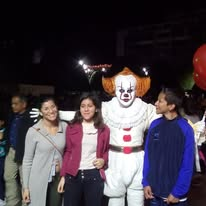

Introduccion
En este apartado tengo sentimientos encontrados debido a que esta esta de mi
vida duro 4 años de mi vida debido a que perdi un año por pandemia, 4 largos
años donde hice amigos, pero tambien 4 largos años en los cuales mi distimia
empeora cada dia, cada dia mas dificil que el anterior, y no poder decir esto
a nadie hasta que empece ir a terapia debido a una situacion que limito mi
habilidad de socializar, aunque tambien gracias a esta etapa tengo muy buenos
amigos que pude valorar y darme cuenta que realmente son mis amigos gracias a
esa situacion

Secundaria
Yo tenía una amiga de mi salón que se llamaba Ashley. La verdad, al
Yo tenía una amiga de mi salón que se llamaba Ashley. La verdad, al
principio nos llevábamos mal, pero después ya nos hicimos amigos, y aun
cuando nos peleábamos, no podíamos estar más de una semana sin hablar. Aun
me daba miedo su gemela porque era más seria, pero sin duda alguna
alguien que no me caía bien y me incomodaba era el novio de esta amiga,
porque terminaban cada semana y volvían, además de que repetía lo que
yo decía pero más largo y subjetivo, como si fuera más profundo. Así,
en este punto también tenía una amiga menor a mí por un año, de la misma
secundaria, y la llegué a considerar mi mejor amiga, a quien realmente
quería mucho y solía irme con ella a la salida todos los días, la cual se
llamaba Paola, y es lo único que recuerdo de ella junto con unos pocos recuerdos. Aun
así, la secundaria era mi lugar seguro y mi forma de escape de mi realidad.
No todo fue bueno; aun recuerdo el 10 de septiembre de 2018, el día en el
que todo se empezó a complicar más de lo que estaba, decidí no
ir a la secundaria. Tal vez era una señal o solamente una coincidencia,
pero aun lo recuerdo como si fuera ayer: alrededor de las 10 de la mañana
recibimos una llamada de mi papá diciendo que tuvo un accidente, pero
que estaba bien. La realidad es que él había recibido 5 impactos de bala
en su cuerpo y perdió el dedo índice izquierdo. Estuvo 2 semanas internado.
Después de esto empezaron los problemas económicos y las deudas, y tuve que
aprender a crecer más rápido de lo que ya me habían estado obligando. Aquí
se empezaron a mostrar mis primeros síntomas de distimia sin siquiera yo saberlo,
hasta años después. Además, 2 años después de esto ocurrió la pandemia y
cuarentena. Durante este periodo realmente quería estar solo, simplemente
ya no quería seguir, así que alejé a todos mis amigos, incluyendo a estas
dos amigas, de lo cual me arrepentiría tiempo después, pero no se pudo hacer nada.
Así que solo quedó seguir con la siguiente etapa de mi vida.